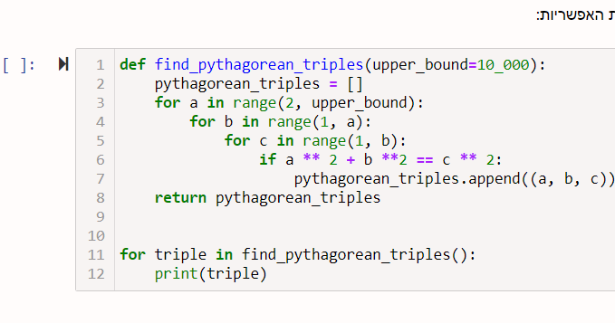

היי (:
תקועה על התרגיל הזה כבר יותר מדי זמן…
אסתיר כדי למנוע ספויילרים ממי שלא פתר:
תקציר
בתרגיל עשיתי עוד 2 פונקציות אחד מהן בודקת אם מספר ראשוני,
ואחת מהן מחזירה רשימה של כל הראשוניים עד המספר המבוקש.
האם כל הפונקציות בתרגיל צריכות להיות גנרטורים? או שאפשר גם להשתמש בפונקציות “רגילות”?
Yam
אפשר להשתמש גם בפונקציות רגילות
ruty3017
יישששש איזה הקלה
2 לייקים
mbrodsky
תופס פה טרמפ על השאלה - פתרתי באותו אופן - פונקציה משנית שמוצאת מחלקים, ופונקציה ראשית שמוסיפה אותם לרשימה עד שיש את כולם. הבעיה היא שהשתמשתי רק בפונקציות רגילות. כשניסיתי לבקש מהפוקנציה המשנית לעבוד עם yield במקום return, קיבלתי הודעת שגיאה TypeError: unsupported operand type(s) for /: ‘int’ and ‘generator’
ואני ממש לא מבין למה זה קורה, במיוחד כי היא נראית דומה מאוד לדוגמאות במחברת, שמשתמשות באינטג’רים. ניסיתי לקרוא במחברת כדי להבין אם אני מפספס משהו שקשור למיוטביליטי, אבל אני לא מצליח למצוא משהו כזה.
Yam
מה השגיאה שהדבקת פה אומרת, במילים פשוטות?
mbrodsky
שאני לא יכול לבצע פעולות כאלה על אינטג’ר? זה מה שהצלחתי להבין מזה. אבל בדוגמאות במחברת דווקא יש שימוש באינטג’ר.

Yam
מה זה “פעולות כאלו”? ולא כתוב רק integer
נסה לתרגם את השגיאה במלואה
mbrodsky
הפעולה שהשתמשתי בה היא מודולו (כדי למצוא מחלקים ללא שארית). אולי מדובר בפעולה שג’נרייטור לא תומך בה מאיזו סיבה. גיגול של הודעת השגיאה הביא אותי בעיקר לתשובות בסטאק אוברפלואו שהן מתקדמות מדי יחסית לידע שלי כרגע. בתיעוד של מודולו כתוב שלפעמים היא לא מתמודדת כל כך טוב עם מספרים מורכבים (לא שנראה לי שאלו אמורים להיות מספרים מורכבים) אז אפשר לנסות להמיר אותם לערך מוחלט עם ()abs, אז ניסיתי וגם זה לא עבד. ניסיתי לקרוא את התיעוד של yield, אבל לא הצלחתי להבין מה גורם לה לזרוק TypeError. חשבתי שאולי זה “:/” זה איזו פעולה שלא למדנו או סוג מיוחד של floor division, אבל נראה שזה לא המצב. אני לא יודע מה עוד ניתן לחפש.
Yam
הנקודתיים שם זה לא חלק מהאופרטור, אלא חלק מההודעה עצמה (פיסוק באנגלית).
אני רוצה שנעבוד על פרימת הבעיה הזו ביחד ולכן אני אצטרך שתתרגם לי רגע 1 ל־1 את ההודעה שפייתון הקפיץ לך.
לייק 1
mbrodsky
אוקיי. אז הודעת השגיאה היא TypeError: unsupported operand type(s) for /: ‘int’ and ‘generator’
בעיית טיפוס: פעולה שאינה נתמכת לאינטג’ר וג’נרייטור. (זה התרגום הכי טוב שעלה לי בראש).
כשאני משנה מריטרן ליילד בפונקציה המשנית, הודעת השגיאה מכוונת דווקא לפונקציה הראשית, בדיוק למקום שבו היא מחלקת את המספר המקורי במחלקים כחלק מהלולאה שתפקידה למצוא את כל המחלקים. כלומר, נדמה שהשגיאה מתרחשת מחוץ לג’נרייטור עצמו. מעבר לזה אני באמת לא יודע.
Yam
תרגום סבבה, אבל שכחת לצרף בתרגום את הפעולה שלא נתמכת בין האינטג’ר והג’נרייטור. יכול למצוא אותה בשגיאה?
mbrodsky
אנחנו מדברים על פעולת החילוק?
Yam
כן. אוקיי, עכשיו אתה יודע שיש לך בעיה של חילוק של מספר שלם ב־generator.
חילוק בין טיפוסים כאלו מן הסתם לא יכול להיות תקין בפייתון.
תוכל להסתכל על השגיאה ולנסות לחשוב מה יכולה להיות הבעיה שם?
mbrodsky
בפונקציה המשנית, זו שבה אני מוצא את המחלקים, אני משתמש במודולו, שהוא סוג של חילוק. אני מריץ אותה בפונקציה הראשית ומקבל מחלק אותו אני מוסיף לרשימה. לאחר מכן אני לוקח את המספר הראשי, ומחלק אותו במחלק שהפונקציה המשנית מצאה (כדי להקטין את המספר כחלק מריצת לולאת הווייל שמוצאת את כל המספרים). זה המקום בו קופצת השגיאה.
Yam
בטוח שאתה לא משתמש בשום מקום בחילוק? איפה הוא מציג את השגיאה?
mbrodsky
כתבתי בהודעה שאני משתמש בחילוק, אבל הוא מתרחש מחוץ לג’נרייטור. הג’נרייטור אמור להחזיר מספר (המחלק הראשוני), ואז אני לוקח את המספר הזה ומחלק את המספר הראשי במחלק שמצאתי באמצעות הפונקציה המשנית. כשאני משתמש בריטרן זה עובד יופי. כשאני משתמש ביילד אז קופצת הודעת השגיאה.
אבל הבעיה היא בשורה הזו, זה מה שפייתון אומר וזו כנראה האמת
עכשיו אתה צריך להבין שבתוך number יש לך int, ובתוך new_number יש לך generator.
נסה לעקוב אחרי התוכנה ולהבין איך זה קרה
לייק 1
mbrodsky
אוקיי, אוקיי, אוקיי (כמו שאומר סטטיק). אז ככה. הבלבול שלי התחיל ממקור סמנטי. אני חשבתי שג’נרייטור זה פשוט השם של פונקציה שמשתמשת ביילד. עכשיו הבנתי ממך שהג’נרייטור זה בעצם הערך שהיא מחזירה, וזה טיפוס איטרבילי שלא ניתן לחלק באינטג’ר. השמתי את הטיפוס הזה בתוך רשימה עם איבר אחד, ואז הצבתי את איבר אפס של הרשימה הזו במקום שבו הצבתי קודם את הג’נרייטור שבבורותי חשבתי שהוא אינטג’ר. עכשיו זה עובד עם יילד! ים, אתה מלך. כלומר, אני שונא אותך על זה שהכרחת אותי לעבוד כל כך קשה, אבל אתה מלך. תודה!


{kind=link}